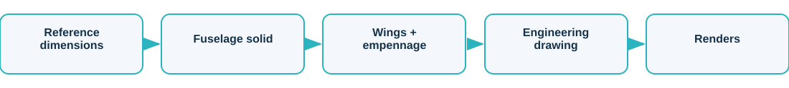
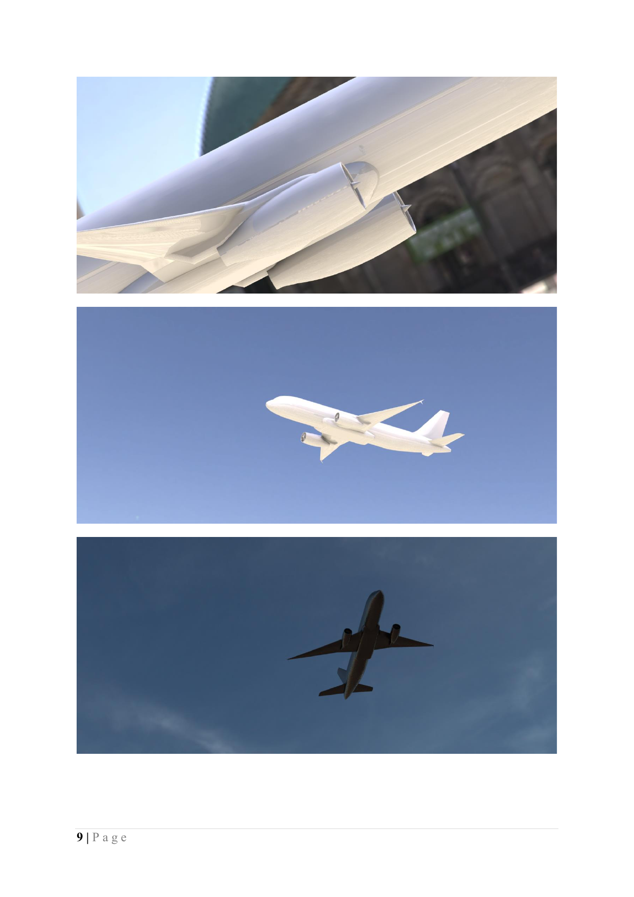
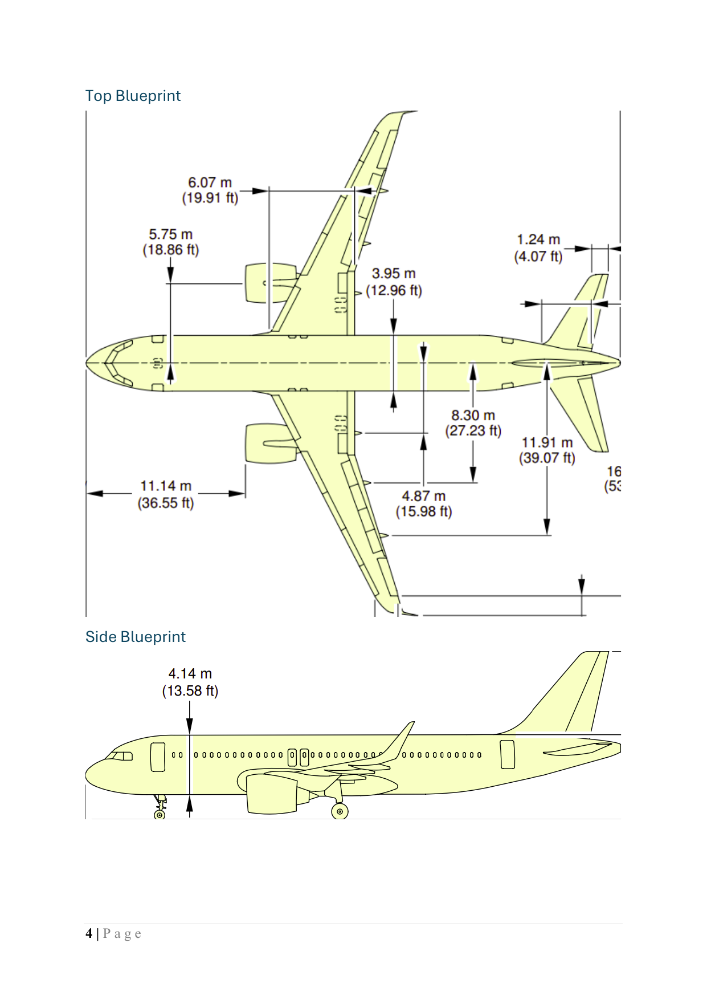
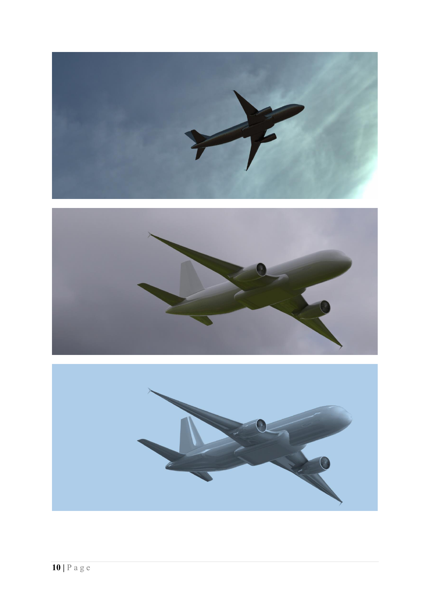

Airbus A320 SolidWorks CAD
Solid model with dimensioned drawings and renders
No Airbus proprietary data is used or reproduced; the model is built from publicly available reference dimensions and carries no manufacturer markings.
Overview
An A320-class airliner modelled in SolidWorks, with a dimensioned multi-view engineering blueprint and isometric renders. An independent CAD exercise from public reference dimensions, with no manufacturer data.
The challenge
Reproduce the form of a narrow-body airliner as a clean solid model and document it with a proper engineering drawing.
Approach

- Sketch and extrude the fuselage from a dimensioned side profile
- Build the wing and empennage from guided blueprints
- Produce a dimensioned three-view engineering drawing
- Render isometric and in-scene views of the finished model
Results
| Tool | SolidWorks |
| Output | part + drawing + renders |
| Drawing | dimensioned 3-view |
| Data | public dimensions only |



What it demonstrates
Demonstrates parametric solid modelling, surfacing an aircraft form, and producing a standards-style multi-view engineering drawing.